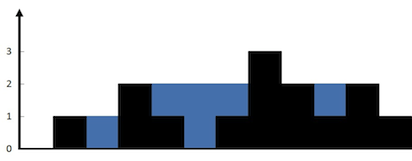

42. 接雨水
左右双指针往中间走，哪一侧已见的最高柱子矮，就先结算哪一侧：它的水位由自己这侧的最高柱子决定。
思路
- 每格的水量 =
min(左边最高, 右边最高) - 自身高度，双指针不用预先算出两个最大值数组。 leftMax、rightMax分别记left、right一路扫过的最高柱子，先更新再比较。leftMax < rightMax：右边至少有一根更高的柱子，所以left这格水位就是leftMax，结算后left++。- 否则对称地结算
right，再right--；两指针相遇时，那一格不用算（水量一定是 0）。
图解
最优解
1class Solution {2 public int trap(int[] height) {3 int left = 0, right = height.length - 1;4 // 两侧已见过的最高柱子5 int leftMax = 0, rightMax = 0, ans = 0;6 while (left < right) {7 leftMax = Math.max(leftMax, height[left]);8 rightMax = Math.max(rightMax, height[right]);9 // 较矮的一侧水位已定：对面至少有一根更高的柱子10 if (leftMax < rightMax) {11 ans += leftMax - height[left];12 left++;13 } else {14 ans += rightMax - height[right];15 right--;16 }17 }18 return ans;19 }20}题目
给定 n 个非负整数表示每个宽度为 1 的柱子的高度图，计算按此排列的柱子，下雨之后能接多少雨水。
示例 1：

输入：height = [0,1,0,2,1,0,1,3,2,1,2,1] 输出：6 解释：上面是由数组 [0,1,0,2,1,0,1,3,2,1,2,1] 表示的高度图，在这种情况下，可以接 6 个单位的雨水（蓝色部分表示雨水）。
示例 2：
输入：height = [4,2,0,3,2,5] 输出：9
提示：
n == height.length1 <= n <= 2 * 1040 <= height[i] <= 105
题面取自力扣当前版本。
数据快照 2026-11-04。题面版权归力扣所有，本站点仅供本人学习使用，请勿对外发布。